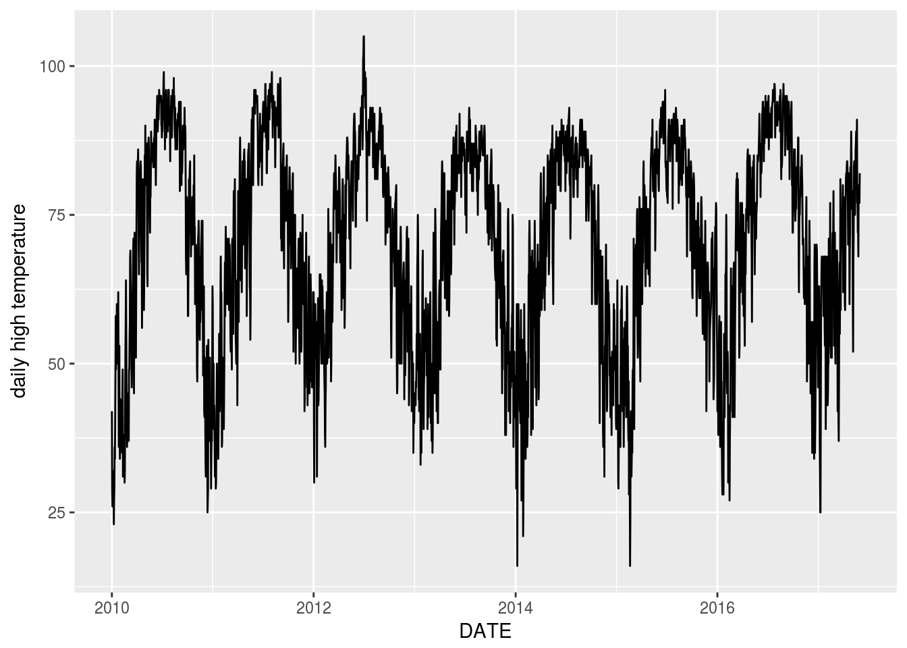
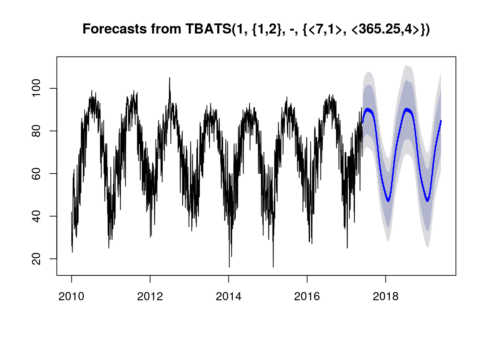

In this project, we will attempt to predict the temperature in Knoxville, TN using the ts and forecast libraries.
First we’ll read in recent temperature data for Knoxville, TN. This was obtained for free from the National Centers for Environmental Information website. We’ll use data is from 1/1/2010 to 5/30/2017. For simplicity we’ll just focus on daily maximum temperature from one weather station. We’ll also use lubridate to turn the DATE column into a genuine date column.
Temperatures <- read_csv("983224.csv") %>%
filter(STATION_NAME == "KNOXVILLE MCGHEE TYSON AIRPORT TN US") %>%
select(DATE, TMAX) %>% mutate(DATE = ymd(DATE)) %>%
filter(DATE > "2010-1-1", DATE < "2017-5-31")Next we’ll plot the last decade of temperature data. The yearly cycle is clearly visible.
Temperatures %>% ggplot(aes(x=DATE, y=TMAX)) + geom_line() + labs(y = "daily high temperature")
Now we’ll use TBATS to construct our model. This will account for annual seasonality as well as weekly seasonality.
TempTS <- msts(Temperatures %>% select(-DATE), seasonal.periods=c(7,365.25), start = 2010)
fit <- tbats(TempTS)
fc <- forecast(fit)
plot(fc)
This definitely captured the annual seasonality.
Now we’ll print the predictions for the next couple days.
Predictions <- as.data.frame(fc$mean)
names(Predictions) <- "TMAX"
Predictions <- Predictions %>%
mutate(DATE = ymd(20170530) + days(row_number())) %>%
select(DATE, TMAX)
Predictions %>% head(10) %>% kable()| DATE | TMAX |
|---|---|
| 2017-05-31 | 84.26738 |
| 2017-06-01 | 84.76376 |
| 2017-06-02 | 84.95885 |
| 2017-06-03 | 85.63916 |
| 2017-06-04 | 86.60600 |
| 2017-06-05 | 87.03556 |
| 2017-06-06 | 87.08748 |
| 2017-06-07 | 87.18037 |
| 2017-06-08 | 87.03067 |
| 2017-06-09 | 86.79794 |
The highs were 81 on 5/31, 81 on 6/1, and 84 on 6/2. So at least these results are semi-reasonable.